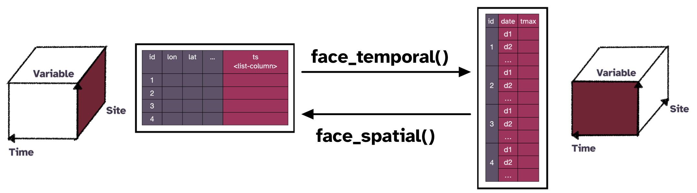

cubble: An R Package for Organizing and Wrangling Multivariate Spatio-temporal Data
Talks:
Switching between space and time: Spatio-temporal analysis with cubble
- customised glyphmap with German weather stations Institute for Geoinformatics, University of Münster, Germany May 2023
- customised glyphmap with Austria weather stations R Ladies Vienna, Austria Apr 2023
- combined with visual diagnostic Department of Mathematics and Statistics, Maynooth University, Ireland Apr 2023
- targeted audience in econometrics and statistics The Australian spatial econometrics and statistics workshop, Melbourne, Australia Feb 2023
- People’s Choice Award ECSS Miniconference, virtue Nov 2022
- invited talk CANSSI Ontario Statistical Software Conference, virtue Nov 2022
- workshop style with exercises (spatial, temporal, and spatio-temporal data, cubble, and glyph map) R Ladies Melbourne, Australia Oct 2022
Cubble: An R package for organizing and wrangling multivariate spatio-temporal data UseR! 2022 Jun 2022
Visual Diagnostics for Constrained Optimisation with Application to Guided Tours

Projection pursuit takes data from high dimension and projects it linearly into a lower-dimension (usually 1D or 2D) by a matrix (add a sketch). This objective function could be non-linear, computationally expensive to calculate the gradient, and may have local optima, which are also interesting to explore, along with the global optimum. Figure 1 is one of the diagnostic plots where two optimisation paths are visualised in the matrix space with a guided tour.
Talk: